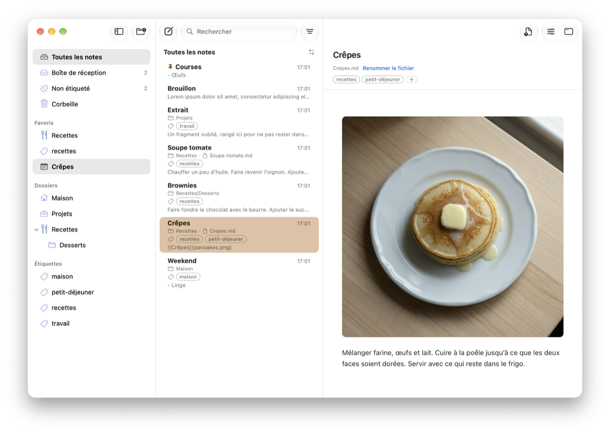
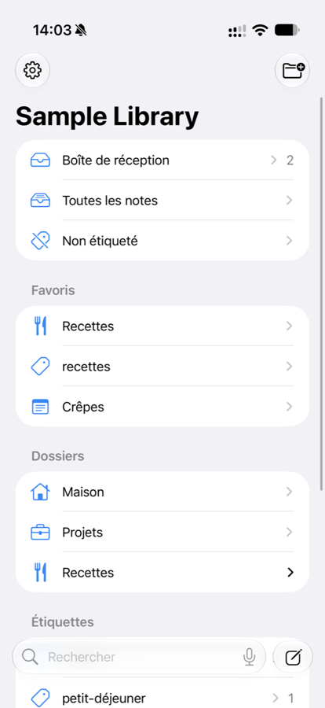

Your notes are files.
Shokonotes is what you use to find them.
A library and reader for Markdown notes kept as plain files in a folder you choose. Full-text search, folders and tags, a clean preview — and your own editor for writing.
Get it on the App StoreOne purchase for Mac and iPhone. No account, no subscription.

Find
Search that answers while you type, across the whole library. Nested folders for your activities, YAML tags that cut across them, favourites and pinned notes.
Read
A clean GitHub Flavored Markdown preview, with syntax highlighting and themes. The library is strictly a reader: browsing never puts you in edit mode by accident.
Write where you already write
Return opens the note in the editor you choose — Typora, VS Code, BBEdit, TextEdit or any other. A global shortcut captures a new note into your Inbox from any app.
On iPhone
Open the same folder from iCloud Drive. Search, read, and catch a thought or a web page into your Inbox before it escapes.
Yours, and private
Plain Markdown files, readable by any app. No account, no telemetry. The Mac app has no network access at all. Sync is your choice: iCloud Drive, Nextcloud, Syncthing, Git, or nothing.
